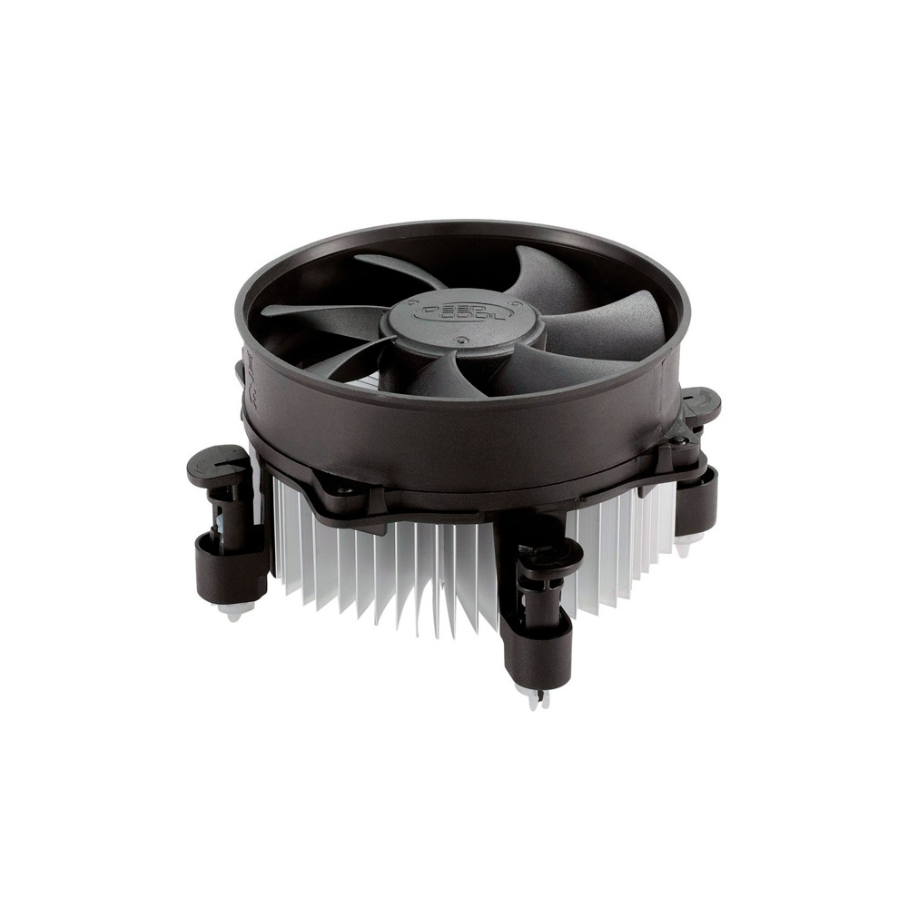

Cooler

Descrição do Produto:
Dimensões do item C x L x 18 x 8 x 15 centímetros
Marca:DEEPCOOL
Tensão: 12 Volts
Potência em watts:65 watts
Método de refrigeração:Ventilação
Nível de ruído:20 dB
Solução térmica ideal para intel lga775, lga1155 e lga1156
Dissipador de calor radial com ventilador de 92 mm para dissipação
do calor com maior eficiência fácil instalação com pinos de pressão